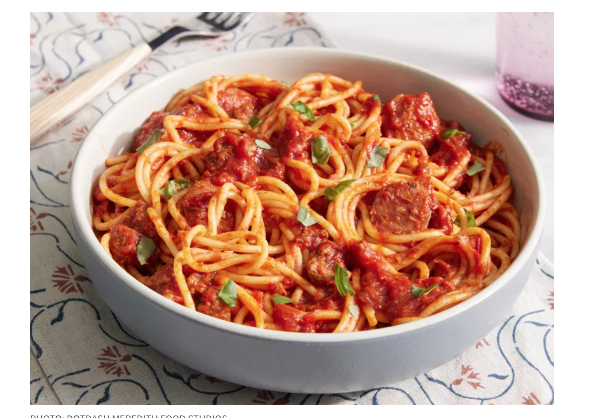

Back to home
Tacos

Pasta ala bolognesa
Ingredients
- 1 tablespoon olive oil
- 1 onion, chopped
- 1 clove garlic, minced
- 1 pound ground beef
- 1 1/4 cups beef broth
- 1/2 cup red wine
- 1 (14.5 ounce) can crushed tomatoes
- 1 (6 ounce) can tomato paste
- 1/2 teaspoon dried basil
- 1/2 teaspoon dried oregano
- 1/2 teaspoon salt
- 1/4 teaspoon ground black pepper
- 1/4 cup heavy cream
- 1 pound spaghetti
- 2 tablespoons grated Parmesan cheese
Steps
- Heat olive oil in a large skillet over medium heat. Add onion and garlic; saute until soft. Add ground beef and cook until evenly brown. Stir in beef broth, wine, tomatoes, and tomato paste. Season with basil, oregano, salt, and pepper. Simmer, covered, for about 1 1/2 hours, stirring occasionally.
- Bring a large pot of lightly salted water to a boil. Cook spaghetti in the boiling water, stirring occasionally until cooked through but firm to the bite, about 12 minutes. Drain.
- Mix cream into the sauce, and cook for 2 minutes more. Serve over hot pasta, and sprinkle with Parmesan cheese.
Enjoy!